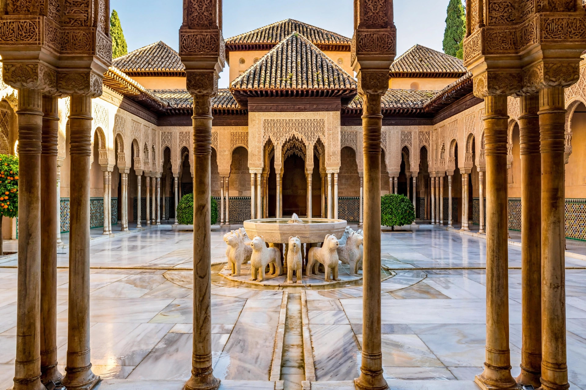

| Al-Andalus | |
|---|---|
 | |
| Period | 711 – 1492 |
| Capital | Córdoba (Emirate and Caliphate); later Seville, Granada |
| Regimes | Umayyad Emirate (756); Caliphate of Córdoba (929–1031); Taifa kingdoms; Almoravid and Almohad rule; Nasrid Emirate of Granada |
| Religion | Islam (official); large Christian and Jewish populations |
| Languages | Andalusi Arabic; Ibero-Romance (Mozarabic); Hebrew |
Al-Andalus (Arabic: الأندلس) was the Muslim-ruled territory of the Iberian Peninsula between 711 and 1492. At its greatest extent it covered most of modern Portugal and Spain; over the centuries it contracted southward as the Christian kingdoms expanded in the long conflict known as the Reconquista, until only the Nasrid Emirate of Granada remained, surrendered to Ferdinand and Isabella in January 1492. Al-Andalus was renowned for its cities, scholarship, and monumental architecture, and its culture profoundly shaped Iberia's languages, agriculture, and art.
In 711 a Muslim army, largely Berber, under Tariq ibn Ziyad crossed the strait that still bears his name (Gibraltar, from Jabal Ṭāriq, "Tariq's mountain") and destroyed the Visigothic kingdom at the Battle of Guadalete. Within a decade nearly the whole peninsula was under Muslim control. Rule from Damascus ended with the Abbasid revolution; in 756 the Umayyad prince Abd al-Rahman I, who had escaped the massacre of his family, established an independent emirate at Córdoba.
In 929 Abd al-Rahman III proclaimed himself caliph. The Caliphate of Córdoba was one of the most prosperous states of medieval Europe: Córdoba, with its Great Mosque and hundreds of thousands of inhabitants, ranked among the largest cities in the world, famous for its libraries — the caliphal library was said to hold hundreds of thousands of volumes — and for scholars such as the surgeon al-Zahrawi. Under the chamberlain al-Mansur (Almanzor) at century's end, Córdoban armies campaigned almost annually against the Christian north, sacking Barcelona and Santiago de Compostela. After 1009 civil war (the fitna) tore the caliphate apart, and it was formally abolished in 1031.
The successor taifa kingdoms — Seville, Granada, Toledo, Zaragoza and others — were culturally brilliant but militarily weak, paying tribute (parias) to the Christian kings. When Alfonso VI of León took Toledo in 1085, the taifas called in the Almoravids of Morocco, who reunified al-Andalus; the stricter Almohads followed in the 12th century, building the Giralda in Seville. Almohad power broke after the Christian victory at Las Navas de Tolosa (1212), and the great cities of the Guadalquivir — Córdoba (1236) and Seville (1248) — fell to Ferdinand III of Castile.
The Nasrid Emirate of Granada survived in the southeast for another 250 years, a tributary of Castile, building the Alhambra palace-city. In 1482 Ferdinand and Isabella opened the final war; on 2 January 1492 the last sultan, Muhammad XII (Boabdil), surrendered Granada, ending Muslim political rule in Iberia. The "conquest" traditions of convivencia — the coexistence, sometimes harmonious and sometimes fraught, of Muslims, Christians, and Jews — remain central to scholarly and popular memory of al-Andalus.
Al-Andalus transmitted Greek and Arabic learning to Latin Europe through translation, introduced crops and irrigation techniques (citrus, rice, sugar cane, cotton), and left an enduring imprint: thousands of Arabic loanwords in Spanish and Portuguese, Mudéjar architecture, and monuments including the Great Mosque of Córdoba, the Alhambra, and the Giralda.
See also: Caliphate of Córdoba · Alhambra · Reconquista · Emirate of Granada